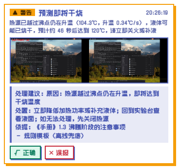
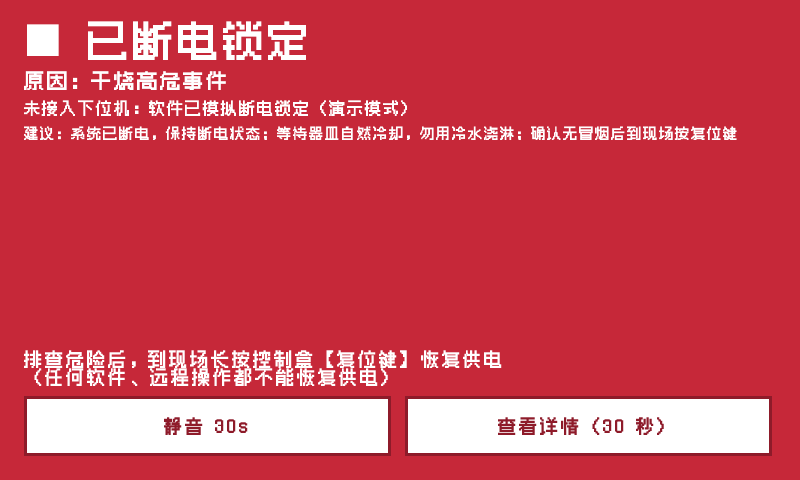

基于双摄协同的实验室安全
事前干预监测系统
放在每一张实验桌上的安全终端
监控只能事后回看
三个缺口，对应三条工程约束，再落到具体的硬件和模块。
缺口
工程约束
落到哪里
事故发生时不能干预
能直接切断加热电源；开发板程序出故障时也要能断
ESP32-S3 控制盒 + 继电器；固件本地硬规则与心跳看门狗
事故发生前不能预警
识别和判断在实验桌本机实时完成，不依赖网络和人工盯守
每桌一台 RK3588 终端，NPU 推理，SafetyEngine 本地运行
俯拍看不清台面
器皿种类、离桌边的距离、热源温度都要测得到
第二路台面摄像头 + 器皿模型；MLX90614 红外测温
系统组成：三个独立程序
控制盒
SHT30 温湿度
MLX90614 红外测温
MQ-2 烟雾
MLX90614 红外测温
MQ-2 烟雾
继电器（加热电源）
控制键、信号灯、蜂鸣器
控制键、信号灯、蜂鸣器
本地硬规则150℃ / 2500 / 心跳 30 s
USB 串口AA 55 帧
CRC16
CRC16
实验台终端
识别线程dual_inference.py
传感器线程sensor_worker.py
SafetyEngine：规则 R1–R9 → 交叉验证 → 温度预测engine.py / state_machine.py / cross_check.py / world_model.py
事件中心语音、灯、截图、SQLite
安全助手只读工具
实验台小屏kiosk.py（Qt）
本机控制台FastAPI :8180
HTTP上报快照
取回阈值、指令
取回阈值、指令
总后台
FastAPI:8200
SQLite账号、区域、指令、审计
原生 JS 前端无构建
安全判断不依赖任何界面：小屏、本机控制台和总后台都只读取 SafetyEngine.snapshot()。
一次判断：三个触发源，一条调用链
SafetyEngine.__init__src/core/engine.pyL104–112 节选，注释简写
# 每一帧识别结果 self.inference_thread.update_frames_signal.connect(self._on_frames) # 每一次控制盒遥测 self.sensor_worker.sensor_data_updated.connect(self._on_sensor) # 每秒一次：摄像头全部掉线时也照常判断 self._tick = QTimer(self) self._tick.timeout.connect(self._on_tick) self._tick.start(1000)
线程边界
识别、串口各在后台线程，结果经 Qt 信号回到主线程再判断
帧队列
maxsize=2，满了丢最旧的（put_latest），判断总用最新一帧
网页线程
不碰 numpy 画面，只取 latest_jpeg() 编码好的字节
_evaluate()每次触发都跑state_machine.evaluate()规则 R1–R9world_model.update()温度预测events.update()事件、语音、灯、截图、SQLitesend_power_off()需要断电时serial.feed()最后一步：喂心跳update_risk()每秒：交叉验证三级 + 三层定级snapshot()小屏、本机控制台、总后台都只读它断电只由规则执行；交叉验证、温度预测和安全助手只影响提醒，不参与断电。
两路摄像头、两个模型：类别名怎么变成事件
全景摄像头ppe_best，12 类
护目镜手套实验服口罩头罩以上五项的未佩戴类进食饮水
模型没有 person 类：检出任意一类装备即视为有人
台面摄像头chem_best，14 类
烧杯锥形瓶圆底烧瓶平底烧瓶梨形瓶试管量筒容量瓶滴定管移液管试剂瓶洗瓶漏斗滴定装置
PPE_VIOLATION_KINDSdual_inference.pyL117–126
PPE_VIOLATION_KINDS = {
"no googles": ("ppe_goggles", "未佩戴护目镜"),
"no goggles": ("ppe_goggles", "未佩戴护目镜"),
"no lab coat": ("ppe_coat", "未穿实验服"),
"no gloves": ("ppe_gloves", "未佩戴手套"),
"no mask": ("ppe_mask", "未佩戴口罩"),
"no head mask": ("ppe_headmask", "未佩戴头罩"),
"eating": ("eating", "实验区饮食"),
"drinking": ("eating", "实验区饮食"),
}器皿分组src/core/cross_check.pyL22–23
HEATABLE = {"beaker", "conical flask", "flat bottom flask",
"round bottom flask", "pear shaped flask", "test tube"}
NON_HEATABLE = {"volumetric flask", "measuring cylinder",
"reagent bottle", "burette", "pipette", "wash bottle"}训练集把护目镜拼成了 googles，映射表两种拼写都收；表里没有的「no xxx」类按规则自动生成 ppe_xxx 事件。
YOLO11n 微调，各约 2.59 M 参数
指标为 best.pt 所在轮次（人员模型第 77 轮，器皿模型第 50 轮）的验证集检测指标，数据来自 models/model_card.json
部署：按 RKNN → ONNX → .pt 加载，失败自动回退
DualInferenceSystem._load_modeldual_inference.pyL292–313 节选，注释简写
for path in paths: # 按 vision.prefer_format 排好的候选
if path.endswith("_rknn_model") and not ON_ROCKCHIP:
continue
try:
model = YOLO(path, task="detect")
if path.endswith("_rknn_model"):
imgsz = int(cfg("vision.imgsz", 640))
# 第一次推理才真正加载 NPU，先试跑一次，失败就换下一种格式
model(np.zeros((imgsz, imgsz, 3), np.uint8), verbose=False, imgsz=imgsz)
self._fixed_imgsz = imgsz
if err:
events.log("NPU 模型没加载上", ..., kind="model")
return model, model.names
except Exception as e:
err = str(e)put_latestdual_inference.pyL145–155，注释简写
def put_latest(q, item):
# 队列满时丢弃最旧的元素
while True:
try:
q.put_nowait(item)
return
except queue.Full:
try:
q.get_nowait()
except queue.Empty:
passNPU 单帧推理
120 ms 人员 / 116 ms 器皿
版本一致
导出工具、板上运行时、librknnrt 均为 2.3.2
输入尺寸
导出时固定 640，推理必须同尺寸
RK3588 实测，FP16；tools/check_npu.py 对比 NPU 与 .pt 的检测结果一致。NPU 加载失败时改用 .pt（CPU），并写一条事件，现场能看到。
从检测框到事件：时间窗口投票
TemporalVoter.updateLabSafetyMonitor/dual_inference.pyL169–180
for kind in kinds:
d = self.hist.setdefault(kind, deque())
d.append((now, kind in hits))
while d and now - d[0][0] > self.window:
d.popleft()
if len(d) < self.min_frames:
continue
ratio = sum(1 for _, h in d if h) / len(d)
if not self.active.get(kind) and ratio >= self.on_ratio:
self.active[kind] = True
elif self.active.get(kind) and ratio <= self.off_ratio:
self.active[kind] = False
窗口
voting.window_s = 3.0 s
确认
命中帧占比 ≥ 60%
解除
命中帧占比 ≤ 20%
最少帧数
4
确认和解除用两个阈值，形成滞回，单帧误检不会触发提醒，事件也不会在边界上反复跳变。
人员在场
人员模型任一类检出即视为有人
无人值守
连续 15 s 无检出（presence.absent_seconds）
画面无效
黑屏、无摄像头、演示数据时不判断无人
演示：吃苹果的同学
检测框 no googlesTemporalVoter 确认events.update 上升沿_play_voice 选语气PLAY_VOICE 0x03，曲目 1
待处理事项
停止饮食，到实验区外进食
佩戴护目镜
佩戴口罩
佩戴头罩
热源未加热环境 25.0℃ 湿度 52%
防护
护目镜实验服手套口罩
状态画面记录静音 60s呼叫教师断电
小屏界面示意，按当前小屏布局绘制
语气由 events._play_voice() 决定：紧急事件或交叉验证为高危时用严厉语气，其余温和；同一事件解除后 10 s 内再出现算同一次，不重复播报。
温和语气ppe_goggles，曲目 1
同学，记得戴好护目镜哦，眼睛只有一双。
温和语气eating，曲目 6
实验区不能吃东西喝水哦，请到室外再吃。
学生是第一用户
系统的首要目标是减少火灾和人身伤害，而不是记录违规。所以提醒先发给台前的学生，管理端只接收需要处理的事件。

每张实验桌一台终端RK3588 开发板、两路 USB 摄像头、控制盒与传感器、小屏；硬件采购估算 1000–1350 元
断网照常工作识别、打分和断电都在本机；连不上总后台只记一条，恢复后自动重新上报
小屏按现场设计800×480 基准自适应，按钮 ≥ 64 px；0.5 s 刷新、不做动画，不和识别抢 CPU
第一个分叉：交叉验证打分，分三级
assess()src/core/cross_check.pyL92–127 节选
elif "WARNING" in ev_levels:
add("规则引擎", "存在警告事件", 40)
if heating and present is False:
add("人员 × 传感器", "正在加热但台前无人", 70, "立即回到实验台，或关闭热源")
for k in missing:
name = PPE_NAMES[k]
if heating and k in ("ppe_goggles", "ppe_gloves"):
add("人员 × 传感器", f"加热中未佩戴{name}（飞溅 / 烫伤风险）", 35 if boiling else 30, ...)
elif items and k in ("ppe_goggles", "ppe_gloves", "ppe_coat"):
add("人员 × 器皿", f"台面有器皿时未佩戴{name}", 15, f"佩戴{name}")
if heating and non_heatable:
add("器皿 × 传感器", "加热时台面有不可加热量器…", 35, "移出量器，改用烧杯或锥形瓶加热")
if wm_risk >= 0.6:
add("温度预测", f"干烧风险分 {wm_risk:.2f}", 70, "立即降低火力或补充液体")
score = min(100, sum(f["points"] for f in factors))
level = "high" if score >= high_score else "mid" if score >= mid_score else "low"输入
人员、器皿、温度预测、事件等级合成的一个字典
输出
level、score、scene，以及每条依据的来源、分值和处置动作
性质
纯函数，不参与断电；测试直接喂字典
分界
30 / 70，可按区域调整，高危界须比中危高 10 分以上
低危 15 分
未加热，整理器皿时未戴手套
15 台面有器皿时未佩戴手套中危 65 分
加热中台面有量筒，未戴护目镜
35 不可加热量器 + 30 加热中未戴护目镜高危 100 分
越过沸点仍在升温
70 干烧风险分 + 40 警告事件，封顶 100断电只看规则；温度预测只负责提前预警
编号
条件（config.yaml → rules）
结果
R1
热源 ≥ 120℃
紧急，断电
R2
≥ 80℃ 且升温 ≥ 2℃/s
警告
R3
加热中（≥ 50℃）无人，持续 60 s
警告 → 断电
R4
无测温 + 可加热器皿 + 无人 + 环境 > 55℃
紧急，断电
R5
烟雾读数 ≥ 1800
紧急，断电
R6
湿度 > 80%
警告
R7
环境温度 > 40℃
警告
R8
加热中台面有容量瓶、量筒等量器
提醒
R9
越过沸点仍升温，预计 ≤ 90 s 到 120℃
警告，不断电
每条规则写成 add(kind, level, title, message, cut=…)，只有 cut=True 的规则会下发断电。
_predictsrc/core/world_model.pyL130–176 节选
# 一阶模型 dT/dt = α + β·T，β = -1/τ，T∞ = -α/β
# 2 秒分箱后差分求导，抑制噪声
if len(d_t) >= 4 and slope > 0.02 and not beyond_boil:
lf = self._linfit(d_t, d_v)
if lf is not None:
beta, alpha = lf
if beta < -1e-4:
t_inf_c = -alpha / beta
tau_c = -1.0 / beta
...
if temp < boil_hi: # 低于沸点：液体还在
eta_boil = time_to(boil_lo) if temp < boil_lo else None
else: # 越过沸点仍升温：可能已烧干
eta = time_to(dry_c)拟合窗口
最近 60 s；越过沸点后只用最近 15 s 外推
沸腾平台
92–104℃ 且 15 s 斜率 < 0.05℃/s
第二个分叉：同一事件，三层各自定级
学生端语音提示、小屏
实验室老师处置队列、群消息
实验楼处置队列
摘口罩、吃苹果
严厉干预
仅记录
无需介入
加热时台面有量筒
温和提醒
需关注
无需介入
越过沸点仍升温
严厉干预
立即处置
关注
断电锁定、烟雾超标
严厉干预
立即处置
需介入
学生端计入全部因子；实验室老师只计入加热、温度、烟雾、断电和学生呼叫，行为违规仅作知会；实验楼只计入断电锁定和紧急事件。
分层上报的实现：同一份打分，三次过滤
tiers()src/core/cross_check.pyL166–191 节选
# ---- 实验室老师 ----
reasons = [
{"text": f["text"], "points": f["points"]} for f in r["factors"]
if f["source"] not in BEHAVIOR_SOURCES and f["source"] != "规则引擎"]
if latched:
reasons.append({"text": "已断电锁定，需到场排查", "points": 100})
elif "CRITICAL" in hz: ...
elif "WARNING" in hz: ...
if d.get("called"):
reasons.append({"text": "学生在终端上呼叫教师", "points": 40})
t_level = _level(t_score, mid_score, high_score)
notes = [f["text"] for f in r["factors"] if f["source"] in BEHAVIOR_SOURCES]
# ---- 实验楼 ----
if latched or "CRITICAL" in hz:
b_level = "high"
elif t_level == "high":
b_level = "mid"学生端
全部因子，即 risk.level
实验室
去掉行为因子；hz 只含安全规则事件（HAZARD_KINDS）
实验楼
只看断电锁定与紧急事件
三层等级随快照字段 risk.tiers 上报；总后台按账号角色选默认视角，旧版终端没有该字段时有兜底。分层只影响上报，不参与断电。

安全助手：只读，只建议
读取交叉验证结果和安全手册（BM25 检索），生成原因、步骤和条款引用。工具表只有 5 个只读工具，没有电源控制接口。
TOOLSsrc/agent/agent.pyL47–66 节选
TOOLS = [ # 全部只读
{"name": "get_status", ...}, # 状态、遥测、锁定
{"name": "get_risk_assessment", ...}, # 交叉验证结果
{"name": "get_recent_events", ...},
{"name": "get_forecast", ...}, # 温度预测
{"name": "search_manual", ...}, # 手册检索
]线路 agent.route = auto：远程通义千问 → 本地 Ollama；都不可用时退回规则模板。
最后一道防线：只断不通
开发板规则判定需断电
POWER_OFF 0x02
控制盒ESP32-S3
断开继电器
加热电源已断开
控制盒回 ACK；0.25 s 未收到则重发，最多发送 3 次。真机实测 ACK 往返时延中位数 4.9 ms。

开发板规则（可按区域调整）R1 热源 ≥ 120℃
R3 加热中无人 60 s
R5 烟雾读数 ≥ 1800
R3 加热中无人 60 s
R5 烟雾读数 ≥ 1800
控制盒本地硬规则（写在固件里）热源 ≥ 150℃
烟雾读数 ≥ 2500
心跳中断 30 s，继电器闭合且热源 > 60℃
烟雾读数 ≥ 2500
心跳中断 30 s，继电器闭合且热源 > 60℃
恢复供电软件和总后台都没有通电接口。复电只能在现场长按控制键 2 秒，控制盒先复查温度和烟雾，超标则拒绝。
程序卡死也能断电：心跳由安全判断驱动
① R3 加热中无人值守src/core/state_machine.pyL250–260 节选
cut_s = rules("unattended_heating_cut_s", 60.0)
if heating and macro_unattended:
if self._unattended_heat_since is None:
self._unattended_heat_since = now
dur = now - self._unattended_heat_since
if dur >= cut_s:
add("unattended_heating", "CRITICAL",
"加热中无人值守超时", ..., cut=True)
else:
add("unattended_heating", "WARNING",
"加热中无人值守", ...)② 只有判断跑完才喂心跳serial_comm.pyL375–381, L421 节选
def feed(self):
self._last_feed = time.time()
@property
def engine_alive(self) -> bool:
return time.time() - self._last_feed \
< self.engine_stale_s # 5 s
# 发送线程
if self.engine_alive and (...):
# 发出 HEARTBEAT③ 控制盒：心跳中断 30 s 且热源 > 60℃，本地断电firmware/lab_guard_esp32/lab_guard_esp32.inoL254–257
if (mlxOk && !isnan(objC) && objC >= HARD_LIMIT_C) cutPower(CUT_OVERTEMP, EV_LOCAL_OVERTEMP); if (smokeReady() && smokeRaw >= SMOKE_LIMIT_RAW) cutPower(CUT_SMOKE, EV_LOCAL_SMOKE); bool hot = !mlxOk || isnan(objC) || objC > WATCHDOG_HOT_C; // 测不到温度时按"可能很热"保守处理 if (relayOn && millis() - lastHb > WATCHDOG_CUT_MS && hot) cutPower(CUT_WATCHDOG, EV_WATCHDOG);
串口协议：定长帧头 + CRC16 + ACK 重发
示例：POWER_OFF 指令，原因码 4（执行上位机断电），115200 波特
AA帧头
55帧头
01LEN
2ASEQ
02CMD
04PAYLOAD
95CRC 低字节
95CRC 高字节
帧构造与校验LabSafetyMonitor/serial_comm.pyL105–118
def crc16_ccitt(data: bytes, crc: int = 0xFFFF) -> int:
for b in data:
crc ^= b << 8
for _ in range(8):
if crc & 0x8000:
crc = ((crc << 1) ^ 0x1021) & 0xFFFF
else:
crc = (crc << 1) & 0xFFFF
return crc
def build_frame(seq: int, cmd: int, payload: bytes = b"") -> bytes:
body = bytes([len(payload), seq & 0xFF, cmd]) + payload
return HEADER + body + struct.pack("<H", crc16_ccitt(body))ACK 超时
ACK_TIMEOUT_S = 0.25
最多发送
ACK_MAX_TRIES = 3
结果
power_off_state 记录是否被确认
一致性
固件与 tests/fake_mcu.py 用同一协议
接收端按帧头重新同步：长度非法或 CRC 错误的帧直接丢弃，不完整的帧留到下一次读取再拼接。
总后台：同一栋楼，三个视角
学生端视角与实验台上的提醒一致
学生端实验室实验楼
演示数据：tools/center_demo.py，13 台模拟终端。视角即接口参数：GET /api/overview?tier=student | teacher | building
终端接入：一个上报接口，指令只有断电和静音
实验台终端center_link.py
总后台center/app.py
POST /api/node/report X-Node-Token 每 2 s：snapshot、meta、acks
返回 profile（区域阈值）、commands、voice（语音包版本）
node_reportcenter/app.pyL449–461 节选
@app.post("/api/node/report")
async def node_report(request: Request, n=Depends(node_auth)):
data = await body(request)
store.ack_commands(n["id"], data.get("acks") or {})
store.record_report(n["id"], ..., snap, meta)
prof = _resolved_rules(n["area_id"])
cmds = store.pending_commands(n["id"])
return {"profile": prof, "commands": [...],
"voice": _voice_pack(n["area_id"]), ...}指令白名单与执行store.py L30、center_link.pyL145–155 节选
COMMANDS = ("cut_power", "mute")
def run_command(self, c):
cmd, args = c.get("cmd"), c.get("args") or {}
if cmd == "cut_power":
return self.engine.cut_power(f"总后台·{who}")
if cmd == "mute":
until = self.engine.mute(...)
return ...
return "不支持的指令" # 没有上电 / 解锁指令执行结果在下一次上报的 acks 里回写；上报失败只记录，终端本机判断不受影响。
分层管理；下发的阈值在终端再校验一次
账号与授权
管理员和教师两种角色；教师只能看、管被授权的楼栋、房间或实验桌users、grants阈值方案
出厂预设打底，按区域逐级覆盖profiles语音包
每类提示温和、严厉两种语气；TTS 或教师本人录音voice_assets、voice_map复核与审计
报警复核汇总现场准确率；所有操作写入审计audittunable_spec()src/core/tunable.pyL38–44 节选
spec = dict(TUNABLE) typ, lo, _, label, grp = spec["rules.dry_burn_c"] spec["rules.dry_burn_c"] = (typ, lo, float(hard_limit_c) - 5, ...) typ, lo, _, label, grp = spec["rules.smoke_raw"] spec["rules.smoke_raw"] = (typ, lo, int(smoke_limit_raw) - 100, ...)

终端 apply_profile() 按本机控制盒硬上限（150℃ / 2500）重建白名单，超限项不生效，原因写进事件，并在下一次上报的 profile_errors 里回报。
设计约束写进自动测试
只断不通、大模型不碰电闸tests/test_platform.pyL173, L231
names = {t["function"]["name"] for t in TOOLS}
check(not any(k in n for n in names
for k in ("power", "relay", "reset", "unlock", "cut")),
"Agent 工具表中没有任何电源 / 继电器 / 解锁类工具")
routes = {getattr(rt, "path", "") for rt in client.app.routes}
check(not any(k in p for p in routes
for k in ("power/on", "power/restore", "unlock", "reset", "release")),
"不存在任何上电 / 解锁接口")87test_backend
安全核心、协议、控制键
安全核心、协议、控制键
44test_platform
控制台、助手、约束
控制台、助手、约束
81test_center
总后台、接入、分层
总后台、接入、分层
测试用 tests/fake_mcu.py 模拟控制盒，数据库建在临时目录，不需要摄像头、控制盒和大模型。
用例数为仓库文档记录；答辩前请在比赛电脑上重跑一遍。
实物运行

照片 1放入 img/photo-1.jpg建议：开发板 + 小屏 + 两路摄像头整机运行

照片 2放入 img/photo-2.jpg建议：控制盒与传感器接线

照片 3放入 img/photo-3.jpg建议：小屏提醒或总后台联调画面
RK3588
双摄识别YOLO11n，人员 12 类，器皿 14 类
交叉验证多源规则打分，分低、中、高三级
三层分级上报学生端、实验室老师、实验楼各自定级
语音提示温和与严厉两种语气，可用教师本人录音
总后台平面图、处置队列、阈值方案、授权
控制盒断电固件硬规则与心跳看门狗，只断不通
安全助手只读工具，引用手册条款
温度预测一阶热平衡拟合；越过沸点才给干烧倒计时
防患于未然
基于双摄协同的实验室安全事前干预监测系统
← → 翻页 N 提词 F 全屏